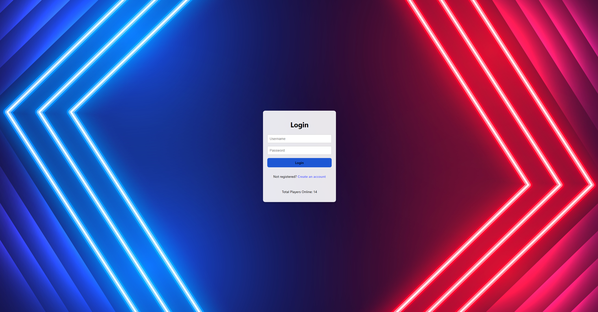
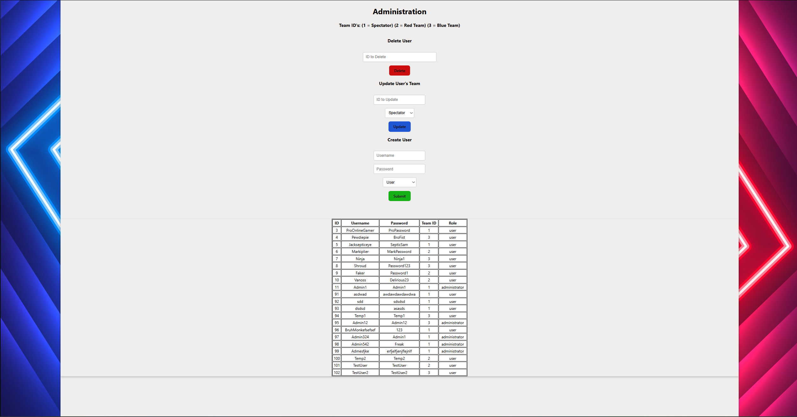

WAMP is an acronym for a full stack web development kit. It stands for Windows, Apache, MySQL, and PHP. Windows is the operating system that the application is built on and runs the backend.
It can commonly be replaced with Linux or Mac OS. I chose Windows for this project as I was most familiar with it. Apache is the web server that handles the connections between the front-end and back-end.
MySQL is the database management system that handles the database of the application. PHP is the server-side scripting language.
I had attempted this project nearing the end of the semester and I was very busy with other final projects at the time, so this project was a little bit rushed. I still had to learn and create a functional
full stack web application, but it is not as refined or complex as my MERN stack application. It still has full CRUD functionality, but the design and user experience is very basic and not as polished as
I would have liked. That being said, the point of my web application is to function as a team leaderboard management system. The user can create an account, log in, pick a team and view who else in on their team.
Admins can create users, view all teams, delete users, and edit a users' team.


The challenges I faced with this project were similar to the ones I faced with the MERN stack application. It was a little bit easier in concept because I had already done a full stack application, so I was familiar with the general process and concepts. However, it was still very difficult to get everything working together and to create a functional application. It utilized windows and MySQL, which I had familiarity with, but I had much less experience with Apache, and I had never worked with PHP before. I would say that PHP and Apache were by far the most difficult parts of this project, and it took a lot of trial and error plus research to get everything working together. Even then, the application is not nearly as polished or refined as I would have liked, but it is functional and I am proud of it. I learned a lot from this project, and I am glad that I was able to complete it, even if it was a little bit rushed.